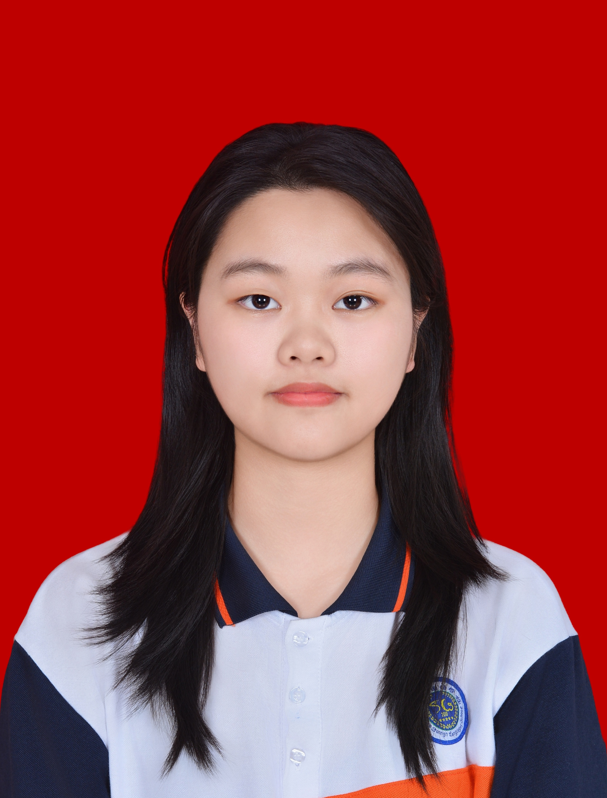

Chen Jiaying
English Communication Student
Payap University, Chiang Mai, Thailand
Email: jiayingchen503@gmail.com
About Me
I am a second-year English Communication student interested in
intercultural communication, international projects, and documentary
research. I enjoy exploring different cultures and conducting research.
I aspire to use my communication and coordination skills to bridge the
gap between people, organizations, and conservation initiatives.
In the future, I hope to gain hands-on experience in wildlife
conservation, environmental protection, and field-based documentary
research, combining communication with opportunities to engage
directly with nature and wildlife.
Education
Payap University
Bachelor's Degree in English Communication
Relevant Coursework:
- Intercultural Communication
- Academic Writing
- Contemporary Literature
- English for Business Communication
- Logic and Critical Thinking
Experience
-
Completed 22 hours of volunteer service in an Environmental Care
Volunteer Project on January 24–25, 2026.
-
Collaborated with team members to develop research findings
and prepare a presentation.
-
Participated in planning a cultural exhibition featuring food
traditions from different cultural backgrounds.
-
Explored cultural differences and communication styles
across different cultural backgrounds.
-
First-Class Honours, Academic Year 2025.
Skills
- Cross-cultural Collaboration
- Information Research
- Critical Thinking
- Microsoft Word
- Team Collaboration
Interests
- Cultural Research and Exploration
- Local Cultures and Traditions
- Wildlife Conservation and Animal Welfare
- Nature and Environmental Protection
- Wildlife Documentaries and Field Research
Languages
- Chinese — Native
- English — Intermediate